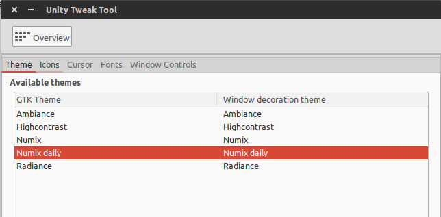
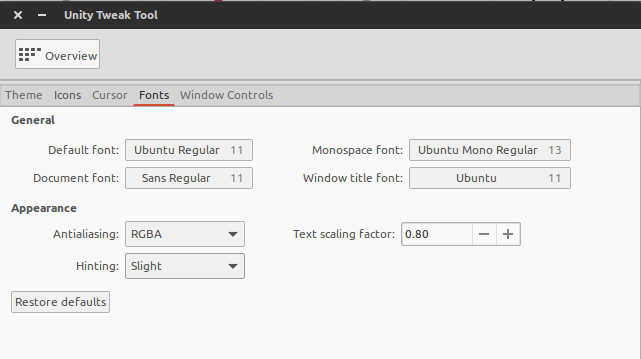
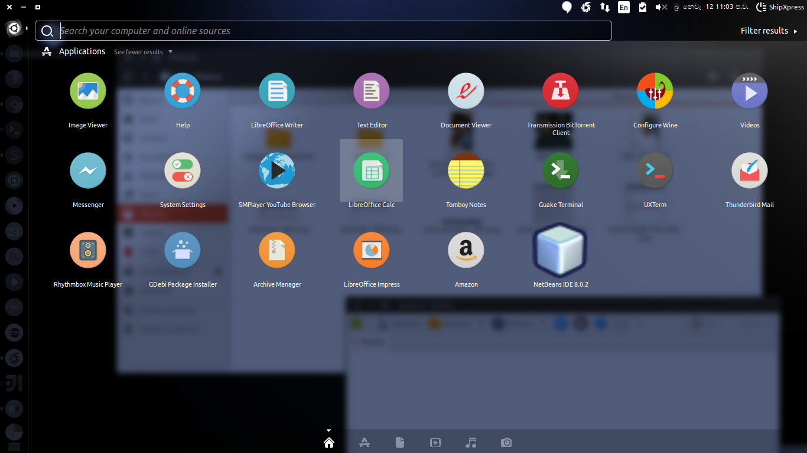
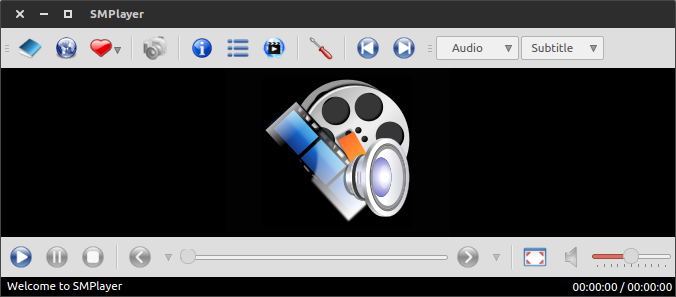

After Install the Ubuntu 15.04 for your computer
Update & Upgrade
First you should update your ubuntu using this command
sudo apt-get update;
Next you can upgrade your ubuntu os using this command
sudo apt-get upgrade;
Install Numix theme and icons in Ubuntu
We’ll be using the official Numix PPA. Open a terminal (Ctrl+Alt+T in Ubuntu) and use the following commands to install Numix theme and icons:
sudo add-apt-repository ppa:numix/ppa
sudo apt-get update
sudo apt-get install numix-gtk-theme numix-icon-theme-circle
If you want to install Numix wallpapers, use the command below:
sudo apt-get install numix-wallpaper-*
Now we are going to give attractive interface to ubuntu. We can install themes for ubuntu. Before tha install the Unity-tweak tool using this command.
sudo apt-get install unity-tweak-tool;
Using Numix theme and icons
Open the Unity-teeak tool and select Themes

Now Select the Numix daily.
Next click the icons tab select Numix-circle

And reduce text-scaling factor to 0.80 using Fonts tab
Now you can see your application launcher is looks like this(This image is a rotated one to show easily)
Your menu looks like this.
yaah it's look grate.
If you want another themes add these and see what it looks like.
sudo add-apt-repository ppa:numix/ppa
sudo apt-get update
sudo apt-get install numix-icon-theme-shine
sudo add-apt-repository ppa:numix/ppa
sudo apt-get update
sudo apt-get install numix-icon-theme-utouch
sudo add-apt-repository ppa:moka/stable
sudo apt-get update
sudo apt-get install moka-icon-theme
Install VLC media player
VLC is the king of media players. It can play almost all kind of media files flawlessly. Moreover, it is an Open Source product. To install VLC in Ubuntu 15.04, use the following command:
sudo apt-get install vlc

Install smplayer
SMplayer is also a good media player.
sudo apt-get install smplayer

Install RAR
sudo apt-get install rar
Install Viber
Toi install viber on your computer download viber debian packages from here and double click.
Install Chrome Browser
Chrome is a popular browser and free software. First download it from chorme official web site. Next double click and install.
Improve battery life and reduce overheating
sudo add-apt-repository ppa:linrunner/tlp
sudo apt-get update
sudo apt-get install tlp tlp-rdw
sudo tlp start
Install Ubuntu Restricted Extras
This will enable your Ubuntu to play popular file formats like mp3, avi, flash videos etc.
sudo apt-get install ubuntu-restricted-extras
Next tutorial i'am goona show you how install development tools in linux ubuntu.
Thank you.